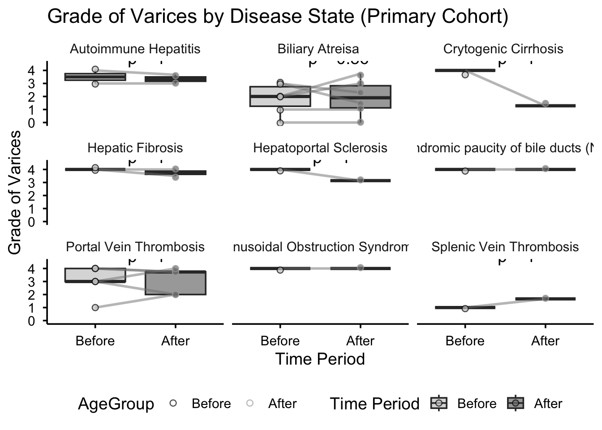

Long Acting Octreotide for Prevention of Variceal Bleeding
Author
Sammie Rosen and Keith Hazleton
Published
February 3, 2026
Introduction
Variceal hemorrhage poses a significant threat to children with chronic liver disease, often leading to severe morbidity and mortality. Octreotide, a somatostatin-analogue, reduces portal venous flow, decreasing blood flow to varices associated with portal hypertension. This retrospective cohort study at Children’s Hospital Los Angeles (CHLA) identified 44 patients who received at least one dose of subcutaneous long-acting octreotide between January 2013 and December 2023. Data on variceal grades, EGD interventions, bleeding episodes, and adverse events were collected.
Data Loading and Setup
# Load necessary librarieslibrary(tidyverse)
Warning: package 'ggplot2' was built under R version 4.5.2
── Attaching core tidyverse packages ──────────────────────── tidyverse 2.0.0 ──
✔ dplyr 1.1.4 ✔ readr 2.1.5
✔ forcats 1.0.0 ✔ stringr 1.5.1
✔ ggplot2 4.0.1 ✔ tibble 3.3.0
✔ lubridate 1.9.4 ✔ tidyr 1.3.1
✔ purrr 1.1.0
── Conflicts ────────────────────────────────────────── tidyverse_conflicts() ──
✖ dplyr::filter() masks stats::filter()
✖ dplyr::lag() masks stats::lag()
ℹ Use the conflicted package (<http://conflicted.r-lib.org/>) to force all conflicts to become errors
library(ggplot2)library(dplyr)library(ggsignif)library(lubridate)library(lmerTest) # For linear mixed models
Warning: package 'lmerTest' was built under R version 4.5.2
Loading required package: lme4
Loading required package: Matrix
Attaching package: 'Matrix'
The following objects are masked from 'package:tidyr':
expand, pack, unpack
Attaching package: 'lmerTest'
The following object is masked from 'package:lme4':
lmer
The following object is masked from 'package:stats':
step
library(ggpubr) library(lme4)library(gridExtra)
Attaching package: 'gridExtra'
The following object is masked from 'package:dplyr':
combine
library(gtsummary)
Warning: package 'gtsummary' was built under R version 4.5.2
# Set working directorysetwd("~/Library/CloudStorage/OneDrive-ChildrensHospitalLosAngeles/Octreotide Study/")# Load Datasetsdatatable <-read.csv("data/csv files/cleaned_datatable.csv")labsdata <-read.csv("data/csv files/labsdata.csv")endoscopydata <-read.csv("data/csv files/Endoscopy Reports(updated).csv")dosedata <-read.csv("data/csv files/oct_doses_withrand.csv")#### setting up the data #### # Convert the date columns to Date typedatatable$date.of.first.dose <-as.Date(datatable$date.of.first.dose, format="%Y-%m-%d")endoscopydata$Date.of.endoscopy <-as.Date(endoscopydata$Date, format="%m/%d/%Y")# Get unique rand values from dataunique_rands <-unique(datatable$rand)# Merge the datasetsmerged_data <- endoscopydata %>%left_join(datatable, by =c("Rand_id"="rand"))# Ensure Grade.of.varices is numeric, coercing any non-numeric values to NAmerged_data$Grade.of.varices <-as.numeric(merged_data$Grade.of.varices)# Convert transplant/shunt dates for censoringmerged_data$Date.of.Transplant <-as.Date(merged_data$Date.of.Transplant, format ="%m/%d/%Y")merged_data$Date.of.Shunt <-as.Date(merged_data$Date.of.Shunt, format ="%m/%d/%Y")# Filter the datesbefore_filtered_data <- merged_data %>%filter(Date.of.endoscopy < date.of.first.dose)after_filtered_data <- merged_data %>%filter(Date.of.endoscopy >= date.of.first.dose)no_scopes <- datatable%>%filter(Number.of.Endoscopies ==0)####Process the Data for Before and After Values ##### 1. Find the "Before" value closest to the treatment date for each patientbefore_data <- merged_data %>%filter(Date.of.endoscopy < date.of.first.dose) %>%group_by(Rand_id) %>%filter(Date.of.endoscopy ==max(Date.of.endoscopy)) %>%# Get the closest date before treatmentselect(Rand_id, Grade.of.varices, Date.of.endoscopy, age.at.first.dose, Disease.State)# 2. Calculate the mean "After" grade for each patient# Censor EGDs occurring after transplant or shunt (matching lab analysis approach)after_data <- merged_data %>%filter(Date.of.endoscopy >= date.of.first.dose) %>%# Exclude post-transplant EGDs when octreotide started before transplantfilter(!(!is.na(Date.of.Transplant) & date.of.first.dose < Date.of.Transplant & Date.of.endoscopy > Date.of.Transplant )) %>%# Exclude post-shunt EGDs when octreotide started before shuntfilter(!(!is.na(Date.of.Shunt) & date.of.first.dose < Date.of.Shunt & Date.of.endoscopy > Date.of.Shunt )) %>%group_by(Rand_id) %>%summarise(After_Grade =mean(Grade.of.varices, na.rm =TRUE)) # Average after treatment# 3. Merge before and after data by Rand_idcombined_data <-left_join(before_data, after_data, by ="Rand_id") %>%filter(!is.na(After_Grade)) # Ensure both before and after values are present#### Merge dose counts into combined_data ####combined_data <- combined_data %>%left_join(datatable %>%select(rand, number.of.doses), by =c("Rand_id"="rand"))#### Define primary and sensitivity cohorts ##### PRIMARY COHORT: Exclude single-dose patients (per reviewer feedback)combined_data_primary <- combined_data %>%filter(number.of.doses >1)# SENSITIVITY COHORT: All patients with paired EGDs (including single-dose)combined_data_sensitivity <- combined_data#### Diagnostic: Report cohort sizes and flow ####cat("\n=== COHORT FLOW SUMMARY ===\n")
=== COHORT FLOW SUMMARY ===
cat("Total patients identified from pharmacy logs:", 51, "\n")
#### Boxplot with disease states - primary cohort only ####combined_boxplot_with_disease <-ggplot(processed_data_long, aes(x = TimePeriod, y = Grade_of_Varices, fill = TimePeriod)) +geom_boxplot(alpha =0.7, outlier.shape =NA) +geom_line(aes(group = Rand_id, color = AgeGroup), alpha =0.5, size =1) +geom_jitter(aes(color = TimePeriod), width =0, size =2, shape =21, alpha =0.7) +scale_fill_manual(values =c("Before"="gray80", "After"="gray50")) +scale_color_manual(values =c("Before"="black", "After"="darkgray")) +theme_minimal(base_size =14) +theme(panel.grid =element_blank(),axis.line =element_line(color ="black"),axis.ticks =element_line(color ="black"),axis.text =element_text(color ="black"),legend.position ="bottom" ) +labs(title ="Grade of Varices by Disease State (Primary Cohort)",x ="Time Period",y ="Grade of Varices",fill ="Time Period" ) +facet_wrap(~ Disease.State) +stat_compare_means(aes(group = TimePeriod),method ="wilcox.test",paired =TRUE,label ="p.format",label.x =1.5,label.y =4.5 )print(combined_boxplot_with_disease)
Warning: Computation failed in `stat_compare_means()`.
Computation failed in `stat_compare_means()`.
Caused by error in `data.frame()`:
! arguments imply differing number of rows: 0, 1

Statistical Analysis
Primary Analysis: Wilcoxon Signed-Rank Test
#### Wilcoxon tests for both cohorts ####cat("\n=== WILCOXON SIGNED-RANK TEST: PRIMARY COHORT ===\n")
=== WILCOXON SIGNED-RANK TEST: PRIMARY COHORT ===
cat("(Excludes single-dose patients, EGDs censored at transplant/shunt)\n")
(Excludes single-dose patients, EGDs censored at transplant/shunt)
Warning in wilcox.test.default(combined_data_primary$Grade.of.varices,
combined_data_primary$After_Grade, : cannot compute exact p-value with ties
Warning in wilcox.test.default(combined_data_primary$Grade.of.varices,
combined_data_primary$After_Grade, : cannot compute exact p-value with zeroes
print(wilcox_primary)
Wilcoxon signed rank test with continuity correction
data: combined_data_primary$Grade.of.varices and combined_data_primary$After_Grade
V = 58.5, p-value = 0.7292
alternative hypothesis: true location shift is not equal to 0
Warning in wilcox.test.default(combined_data_sensitivity$Grade.of.varices, :
cannot compute exact p-value with ties
Warning in wilcox.test.default(combined_data_sensitivity$Grade.of.varices, :
cannot compute exact p-value with zeroes
print(wilcox_sensitivity)
Wilcoxon signed rank test with continuity correction
data: combined_data_sensitivity$Grade.of.varices and combined_data_sensitivity$After_Grade
V = 82, p-value = 0.4836
alternative hypothesis: true location shift is not equal to 0
Inference stable across cohort definitions: YES (both non-significant)
Age Group Mixed Model (Primary Cohort)
#### linear mixed models for the effects of age groups on grade of varices ####processed_data_long$Rank_Grade_of_Varices <-rank(processed_data_long$Grade_of_Varices)lmm_model_age <-lmer( Grade_of_Varices ~ TimePeriod + (1| AgeGroup) + (1| Rand_id),data = processed_data_long)
boundary (singular) fit: see help('isSingular')
Linear Mixed Model: Effects of Age Group on Varice Grade
Characteristic
Beta
95% CI
p-value
(Intercept)
2.9
2.3, 3.5
<0.001
TimePeriod
Before
—
—
After
-0.14
-0.60, 0.33
0.5
Abbreviation: CI = Confidence Interval
# Model summarysummary(lmm_model_age)
Linear mixed model fit by REML. t-tests use Satterthwaite's method [
lmerModLmerTest]
Formula: Grade_of_Varices ~ TimePeriod + (1 | AgeGroup) + (1 | Rand_id)
Data: processed_data_long
REML criterion at convergence: 118.6
Scaled residuals:
Min 1Q Median 3Q Max
-1.8991 -0.5944 0.1862 0.4049 1.7993
Random effects:
Groups Name Variance Std.Dev.
Rand_id (Intercept) 1.0802 1.0393
AgeGroup (Intercept) 0.0000 0.0000
Residual 0.4863 0.6973
Number of obs: 40, groups: Rand_id, 20; AgeGroup, 5
Fixed effects:
Estimate Std. Error df t value Pr(>|t|)
(Intercept) 2.9000 0.2799 25.7559 10.362 1.12e-10 ***
TimePeriodAfter -0.1352 0.2205 18.9993 -0.613 0.547
---
Signif. codes: 0 '***' 0.001 '**' 0.01 '*' 0.05 '.' 0.1 ' ' 1
Correlation of Fixed Effects:
(Intr)
TimePrdAftr -0.394
optimizer (nloptwrap) convergence code: 0 (OK)
boundary (singular) fit: see help('isSingular')
Disease State Mixed Model
# Fit the linear mixed model using Grade_of_Varices as the outcomelmm_model_disease <-lmer(Grade_of_Varices ~ TimePeriod * Disease.State + (1| Rand_id), data = processed_data_long)
Linear Mixed Model: Effects of Disease State on Varice Grade
Characteristic
Beta
95% CI
p-value
(Intercept)
3.5
1.8, 5.2
<0.001
TimePeriod
Before
—
—
After
-0.17
-1.7, 1.3
0.8
Disease.State
Autoimmune Hepatitis
—
—
Biliary Atreisa
-1.7
-3.6, 0.26
0.085
Crytogenic Cirrhosis
0.50
-2.4, 3.4
0.7
Hepatic Fibrosis
0.50
-1.9, 2.9
0.7
Hepatoportal Sclerosis
0.50
-2.4, 3.4
0.7
Non-syndromic paucity of bile ducts (NSBDP)
0.50
-2.4, 3.4
0.7
Portal Vein Thrombosis
-0.50
-2.5, 1.5
0.6
Sinusoidal Obstruction Syndrome
0.50
-2.4, 3.4
0.7
Splenic Vein Thrombosis
-2.5
-5.4, 0.39
0.085
TimePeriod * Disease.State
After * Biliary Atreisa
0.26
-1.5, 2.0
0.7
After * Crytogenic Cirrhosis
-2.5
-5.1, 0.03
0.052
After * Hepatic Fibrosis
-0.08
-2.2, 2.0
>0.9
After * Hepatoportal Sclerosis
-0.69
-3.3, 1.9
0.6
After * Non-syndromic paucity of bile ducts (NSBDP)
Correlation matrix not shown by default, as p = 18 > 12.
Use print(x, correlation=TRUE) or
vcov(x) if you need it
Laboratory Value Mixed Models
#### run Hb, MCV, PLTE, Alb, Na with linear mixed-effects model ##### Step 1: Merge the two datasetsmerged_data <-merge(datatable, labsdata, by.x ="rand", by.y ="rand_id", all.x =TRUE, all.y =TRUE)merged_data$Date.of.Transplant <-as.Date(merged_data$Date.of.Transplant, format ="%m/%d/%Y")merged_data$Date.of.Shunt <-as.Date(merged_data$Date.of.Shunt, format ="%m/%d/%Y")# Step 2: Create a condition to exclude rows from labsdataexclude_condition <- (# Only apply exclusion if both Date.of.Transplant and Date.of.Shunt are not missing (!is.na(merged_data$Date.of.Transplant) & merged_data$date.of.first.dose < merged_data$Date.of.Transplant) | (!is.na(merged_data$Date.of.Shunt) & merged_data$date.of.first.dose < merged_data$Date.of.Shunt)) &(# Only exclude if event_end_dt is after the corresponding Date.of.Transplant or Date.of.Shunt (!is.na(merged_data$Date.of.Transplant) & merged_data$event_end_dt > merged_data$Date.of.Transplant) | (!is.na(merged_data$Date.of.Shunt) & merged_data$event_end_dt > merged_data$Date.of.Shunt))# Step 3: Filter out the specific rows from merged_data that meet the conditionmerged_data_filtered <- merged_data[!exclude_condition, ]# Step 4: Remove participants with only one data pointparticipant_counts <-table(merged_data_filtered$rand)participants_to_remove <-names(participant_counts[participant_counts ==1])# Filter out those participants with only one data pointmerged_data_filtered <- merged_data_filtered[!merged_data_filtered$rand %in% participants_to_remove, ]# Step 5: Check the filtered datanrow(merged_data_filtered) # Check how many rows are left after filtering
[1] 83848
table(merged_data_filtered$rand) # Check how many unique rand values remain
# Display all lab model summariesfor (event innames(model_results)) {cat(paste0("\n=== ", event, " Model Summary ===\n"))print(model_results[[event]])}
=== HGB Model Summary ===
Linear mixed model fit by REML. t-tests use Satterthwaite's method [
lmerModLmerTest]
Formula: result_val ~ octreotide_status + (1 | rand)
Data: df
REML criterion at convergence: 19086.5
Scaled residuals:
Min 1Q Median 3Q Max
-5.0899 -0.6406 -0.0490 0.6532 5.1421
Random effects:
Groups Name Variance Std.Dev.
rand (Intercept) 1.524 1.234
Residual 1.934 1.391
Number of obs: 5403, groups: rand, 44
Fixed effects:
Estimate Std. Error df t value Pr(>|t|)
(Intercept) 9.413e+00 1.894e-01 4.365e+01 49.690 < 2e-16 ***
octreotide_statusafter 5.654e-01 5.756e-02 5.386e+03 9.822 < 2e-16 ***
octreotide_statusduring 2.168e-01 4.965e-02 5.392e+03 4.366 1.29e-05 ***
---
Signif. codes: 0 '***' 0.001 '**' 0.01 '*' 0.05 '.' 0.1 ' ' 1
Correlation of Fixed Effects:
(Intr) octrtd_sttsf
octrtd_sttsf -0.087
octrtd_sttsd -0.104 0.316
=== MCV Model Summary ===
Linear mixed model fit by REML. t-tests use Satterthwaite's method [
lmerModLmerTest]
Formula: result_val ~ octreotide_status + (1 | rand)
Data: df
REML criterion at convergence: 31327.5
Scaled residuals:
Min 1Q Median 3Q Max
-4.2237 -0.5462 0.0027 0.5289 5.4304
Random effects:
Groups Name Variance Std.Dev.
rand (Intercept) 28.83 5.369
Residual 19.86 4.457
Number of obs: 5341, groups: rand, 44
Fixed effects:
Estimate Std. Error df t value Pr(>|t|)
(Intercept) 85.7267 0.8176 43.9192 104.852 < 2e-16 ***
octreotide_statusafter -1.6696 0.1865 5314.6225 -8.954 < 2e-16 ***
octreotide_statusduring -0.8320 0.1604 5317.7659 -5.188 2.2e-07 ***
---
Signif. codes: 0 '***' 0.001 '**' 0.01 '*' 0.05 '.' 0.1 ' ' 1
Correlation of Fixed Effects:
(Intr) octrtd_sttsf
octrtd_sttsf -0.066
octrtd_sttsd -0.077 0.320
=== PLTE Model Summary ===
Linear mixed model fit by REML. t-tests use Satterthwaite's method [
lmerModLmerTest]
Formula: result_val ~ octreotide_status + (1 | rand)
Data: df
REML criterion at convergence: 63113.9
Scaled residuals:
Min 1Q Median 3Q Max
-6.1832 -0.3647 -0.0431 0.2463 14.4924
Random effects:
Groups Name Variance Std.Dev.
rand (Intercept) 10429 102.12
Residual 7281 85.33
Number of obs: 5364, groups: rand, 44
Fixed effects:
Estimate Std. Error df t value Pr(>|t|)
(Intercept) 152.668 15.551 43.515 9.817 1.32e-12 ***
octreotide_statusafter -16.098 3.562 5337.563 -4.520 6.32e-06 ***
octreotide_statusduring -45.473 3.063 5340.777 -14.844 < 2e-16 ***
---
Signif. codes: 0 '***' 0.001 '**' 0.01 '*' 0.05 '.' 0.1 ' ' 1
Correlation of Fixed Effects:
(Intr) octrtd_sttsf
octrtd_sttsf -0.066
octrtd_sttsd -0.077 0.320
=== Albumin Model Summary ===
Linear mixed model fit by REML. t-tests use Satterthwaite's method [
lmerModLmerTest]
Formula: result_val ~ octreotide_status + (1 | rand)
Data: df
REML criterion at convergence: 7833.7
Scaled residuals:
Min 1Q Median 3Q Max
-3.6495 -0.6308 -0.0237 0.6787 4.2877
Random effects:
Groups Name Variance Std.Dev.
rand (Intercept) 0.1647 0.4059
Residual 0.2631 0.5130
Number of obs: 5095, groups: rand, 44
Fixed effects:
Estimate Std. Error df t value Pr(>|t|)
(Intercept) 3.265e+00 6.297e-02 4.260e+01 51.851 < 2e-16 ***
octreotide_statusafter 2.782e-01 2.161e-02 5.085e+03 12.874 < 2e-16 ***
octreotide_statusduring 1.397e-01 1.890e-02 5.090e+03 7.391 1.7e-13 ***
---
Signif. codes: 0 '***' 0.001 '**' 0.01 '*' 0.05 '.' 0.1 ' ' 1
Correlation of Fixed Effects:
(Intr) octrtd_sttsf
octrtd_sttsf -0.101
octrtd_sttsd -0.122 0.343
=== Sodium Model Summary ===
Linear mixed model fit by REML. t-tests use Satterthwaite's method [
lmerModLmerTest]
Formula: result_val ~ octreotide_status + (1 | rand)
Data: df
REML criterion at convergence: 27830.3
Scaled residuals:
Min 1Q Median 3Q Max
-5.1000 -0.5672 -0.0143 0.5287 7.7542
Random effects:
Groups Name Variance Std.Dev.
rand (Intercept) 4.518 2.126
Residual 9.613 3.100
Number of obs: 5425, groups: rand, 44
Fixed effects:
Estimate Std. Error df t value Pr(>|t|)
(Intercept) 137.6751 0.3317 46.0612 415.066 < 2e-16 ***
octreotide_statusafter -0.4563 0.1265 5420.2964 -3.608 0.000312 ***
octreotide_statusduring -0.8763 0.1102 5421.9846 -7.954 2.18e-15 ***
---
Signif. codes: 0 '***' 0.001 '**' 0.01 '*' 0.05 '.' 0.1 ' ' 1
Correlation of Fixed Effects:
(Intr) octrtd_sttsf
octrtd_sttsf -0.111
octrtd_sttsd -0.132 0.321
Summary of Findings
Primary Outcome: Variceal Grade
The primary analytical cohort excluded single-dose patients and censored EGDs occurring after transplant or shunt. The Wilcoxon signed-rank test showed no significant reduction in variceal grade in the primary cohort. A sensitivity analysis including single-dose patients was conducted to assess robustness.
Secondary Outcomes: Laboratory Values
The linear mixed models showed significant changes in laboratory values during the octreotide treatment period. However, these changes occurred during a period of concurrent endoscopic and surgical interventions and cannot be attributed to octreotide alone.
Note on Interpretation
These results differ from the original submission, which included post-transplant and post-shunt EGDs and did not exclude single-dose patients. The current analysis applies exclusion criteria recommended by reviewers to isolate the potential effect of octreotide from confounding surgical interventions.